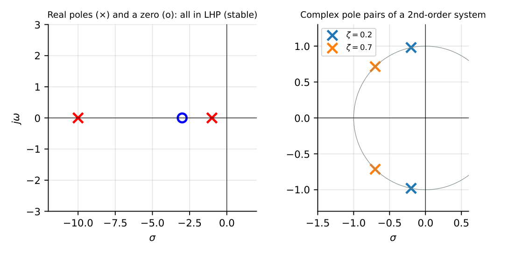
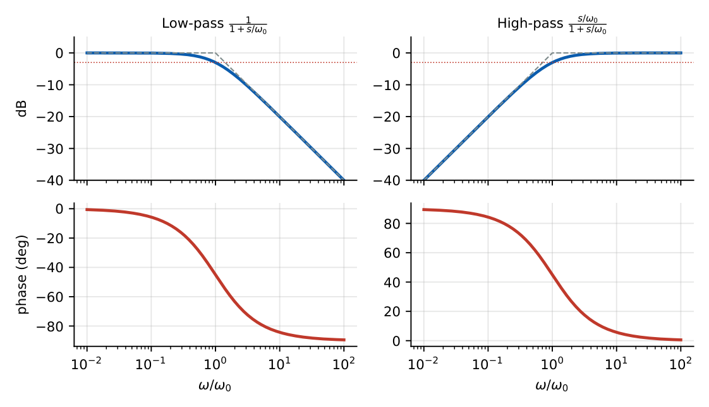
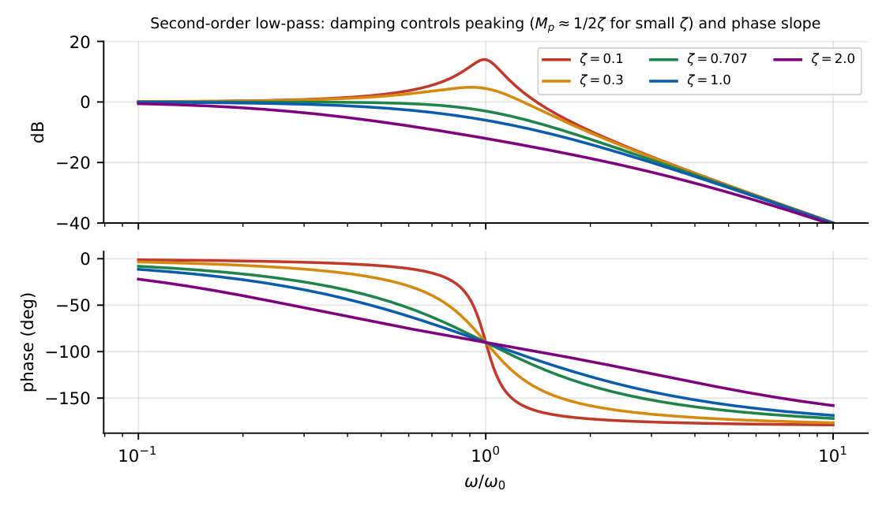
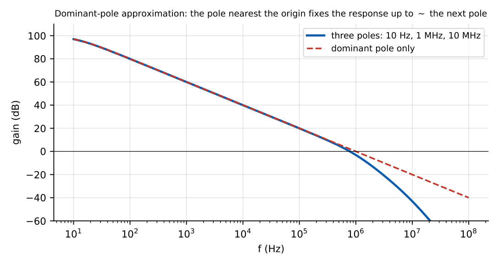
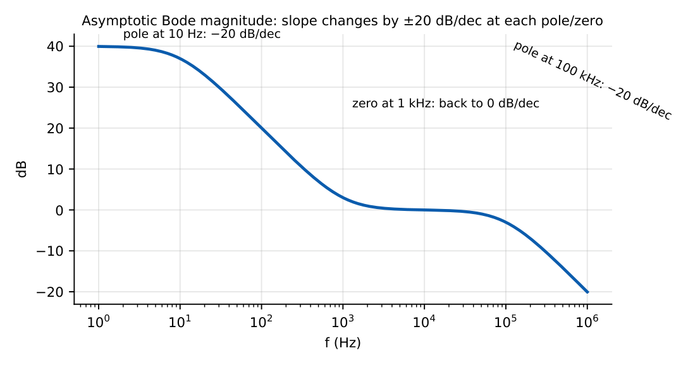
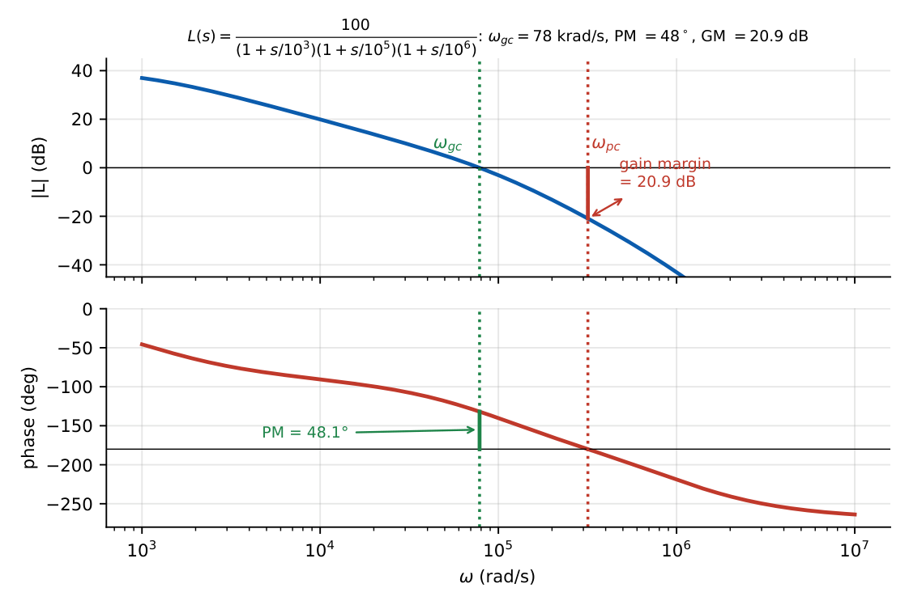

Frequency Response of Amplifiers
In this chapter
26.1 Transfer functions
For a linear, time-invariant amplifier the transfer function is a ratio of polynomials in the complex frequency \(s=\sigma+j\omega\): \[H(s)=\frac{N(s)}{D(s)}=K\frac{(s-z_1)(s-z_2)\cdots}{(s-p_1)(s-p_2)\cdots},\qquad H(j\omega)=|H|e^{j\phi}.\] Magnitude and phase are read off at \(s=j\omega\). Engineers plot \(20\log_{10}|H|\) and \(\phi\) versus \(\log\omega\) (Bode plots).
26.2 Poles and zeros
Poles (\(D(p)=0\)) determine stability and bandwidth; zeros (\(N(z)=0\)) shape the response (notches, boosts, and phase).

A pole in the left half plane (\(\mathrm{Re}<0\)) is stable; a right-half-plane pole grows exponentially (unstable). A right-half-plane zero does not destabilise a loop but adds phase lag (the CS stage’s RHP zero at \(g_m/C_{gd}\)).
26.3 First-order systems
Low-pass: \(H=\dfrac{A_0}{1+s/\omega_0}\): \(|H|=\dfrac{A_0}{\sqrt{1+(\omega/\omega_0)^2}}\), \(\phi=-\tan^{-1}(\omega/\omega_0)\)
High-pass: \(H=A_0\dfrac{s/\omega_0}{1+s/\omega_0}\): \(\phi=90^\circ-\tan^{-1}(\omega/\omega_0)\)
At \(\omega_0\): \(|H|=A_0/\sqrt2\) (\(-3\) dB), phase \(\mp45^\circ\); slope \(\mp20\) dB/dec beyond.

26.4 Second-order systems
\[H(s)=\frac{\omega_0^2}{s^2+2\zeta\omega_0s+\omega_0^2},\qquad Q=\frac{1}{2\zeta}.\] Poles: \(s=-\zeta\omega_0\pm j\omega_0\sqrt{1-\zeta^2}\) (complex for \(\zeta<1\)).
Peaking (for \(\zeta<0.707\)): \(M_p=\dfrac{1}{2\zeta\sqrt{1-\zeta^2}}\) at \(\omega_r=\omega_0\sqrt{1-2\zeta^2}\).
Maximally flat: \(\zeta=0.707\) (\(Q=0.707\)). Critically damped: \(\zeta=1\) (two equal real poles). Phase: \(-90^\circ\) at \(\omega_0\) for any \(\zeta\).

26.5 Dominant pole
If one pole is much lower than all others (a factor \(\ge4\)–\(10\)), the response up to the next pole is essentially that of a first-order system: \[H(s)\approx\frac{A_0}{1+s/\omega_{p1}}.\] Op-amps are deliberately built this way (compensation).

26.6 Bode magnitude plots
1. Start with the DC (low-frequency) gain and slope determined by any poles/zeros at the origin.
2. At each pole break frequency the slope changes by \(-20\) dB/dec; at each zero by \(+20\) dB/dec.
3. Repeated poles/zeros change the slope by \(\mp20n\) dB/dec.
4. Actual curve lies \(3\) dB below (above) the asymptote at a pole (zero) corner frequency.
\(H(s)=\dfrac{100\,(1+s/10^3)}{(1+s/10)(1+s/10^5)}\): DC gain \(40\) dB. Slope \(-20\) dB/dec from \(10\) rad/s; the zero at \(10^3\) restores a flat slope after a \(40\) dB drop, at \(0\) dB; the pole at \(10^5\) brings \(-20\) dB/dec.

26.7 Bode phase plots
The phase of a pole is \(-\tan^{-1}(\omega/\omega_p)\): \(-45^\circ\) at \(\omega_p\), \(-5.7^\circ\) at \(0.1\omega_p\), \(-84.3^\circ\) at \(10\omega_p\). A zero contributes the opposite sign. Total phase = sum of the individual phases. A rule of thumb: phase \(\approx-90^\circ\times\)(net slope in units of \(20\) dB/dec) away from corners.
26.8 Gain crossover frequency
\(\omega_{gc}\) is the frequency where the loop gain \(|L(j\omega)|=1\) (0 dB).
26.9 Phase crossover frequency
\(\omega_{pc}\) is the frequency where \(\angle L(j\omega)=-180^\circ\).
26.10 Bandwidth
The \(-3\) dB bandwidth is the frequency at which \(|H|=|H|_{max}/\sqrt2\). For a first-order low-pass \(\mathrm{BW}=f_0\); for a second-order Butterworth \(\mathrm{BW}=f_0\); for a dominant-pole amplifier, unity-gain frequency \(f_T=A_0f_{p1}\) (GBW).
26.11 Gain margin
\(\mathrm{GM}=-20\log_{10}|L(j\omega_{pc})|\) (dB): how much the loop gain can increase before instability.
26.12 Phase margin
\(\mathrm{PM}=180^\circ+\angle L(j\omega_{gc})\): how much extra phase lag can be tolerated at the gain crossover before instability.

At \(\omega_{gc}=78.4\) krad/s: phase \(=-(\tan^{-1}78.4+\tan^{-1}0.784+\tan^{-1}0.0784)=-(89.3+38.1+4.5)=-131.9^\circ\), so PM \(=48.1^\circ\). At \(\omega_{pc}=318\) krad/s: \(|L|=0.090\), GM \(=20.9\) dB.
Q1. \(H(s)=\dfrac{1000}{1+s/100}\). The \(-3\) dB frequency and the DC gain in dB are rad/s and dB.
Q2. A second-order system has \(\zeta=0.5\). The peaking \(M_p\) is .
Q3. A low-pass response has poles at \(10^3\) and \(10^5\) rad/s; the high-frequency roll-off is dB/dec.
Q4. Phase of \(1/(1+s/\omega_0)\) at \(\omega=10\omega_0\) is degrees.
Q5. Magnitude in dB of \(H=10(1+s/10)/(1+s/1000)\) at \(\omega=10^4\): (A) 20 (B) 40 (C) 60 (D) 0.
Answers: Q1: 100 rad/s; 60 dB. Q2: \(1/(2\times0.5\times0.866)=1.155\). Q3: \(-40\). Q4: \(-84.3^\circ\). Q5: \(|H|\approx10\times\dfrac{10^4/10}{10^4/10^3}=10\times100=1000\), i.e. 60 dB: (C).
- Poles at \(10\), \(10^4\) rad/s, DC gain 80 dB. Find the gain at \(10^3\) rad/s. [\(\approx40\) dB]
- Where is the phase \(-135^\circ\) for two equal poles at \(1\) kHz? [\(\omega=\omega_p\) (\(f=1\) kHz)]
- State the difference between \(\omega_{gc}\) and \(\omega_{pc}\). [gain \(=1\) vs. phase \(=-180^\circ\)]